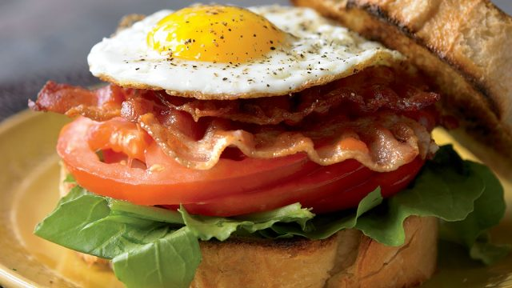

Ultimate BLT

Description
Is there any combination as rewarding and perfectly calibrated as a bacon, lettuce, and tomato sandwich? With the crispy, smoky bacon playing off the cool crunch of the lettuce and the acidic sweetness of ripe tomato, it's a top contender for Last Meal on Earth status. Bog down the BLT with bulky, sweetened bread and a sea of mayo, though, and the appeal vanishes—just as the caloric toll rises.
Instead of being slathered in a sea of sauce, we chose to crown our BLT with a soft, oozing fried egg—the only condiment you need. It adds gooey goodness and a punch of protein you'll be glad to have.
Here's How To Make It
Serves 4
Ingredients
- 1 Egg
- 2 slices lightly toasted bread
- Handful of arugula (There is an unspoken schism between those that love the cruch of iceberg or romaine, and those that like the peppery bit of watercress or arugla. Choose your fighter!)
- 3 thick slices of tomato
- 4 strips of bacon, cooked
- Salt and Black Pepper to taste
Instructions
- Heat a small nonstick skillet over medium heat.
- Coat with olive oil cooking spray and add the egg.
- Cook sunny side up until the white is set but the yolk is runny.
- Line the bottom half of the bread with the arugula, followed by the tomato slices and bacon.
- Set the cooked egg carefully on top, and season with a pinch of salt and plenty of fresh cracked pepper.
- Top with the second slice of bread.